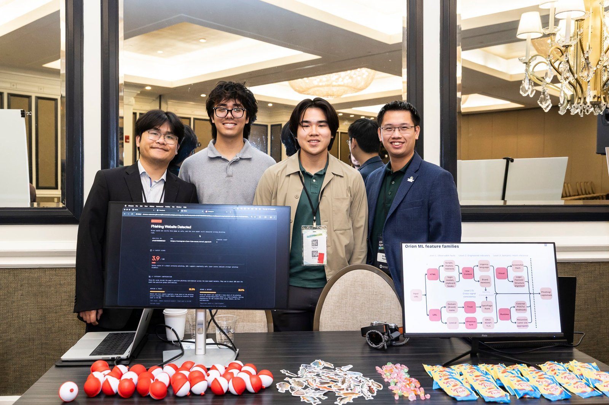
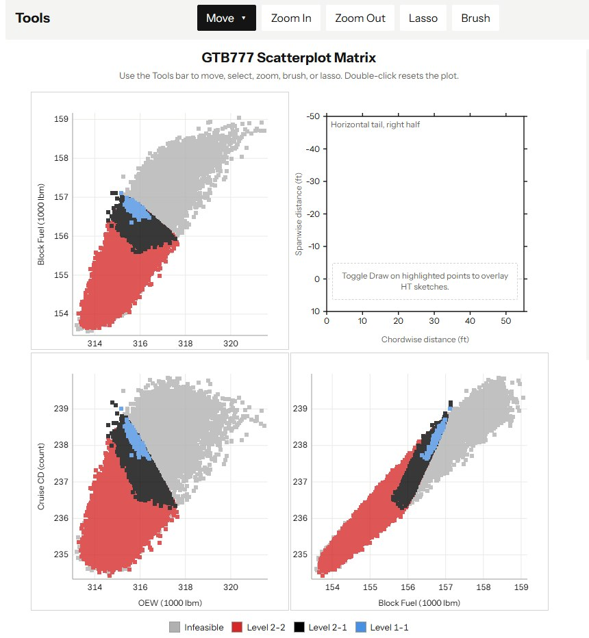
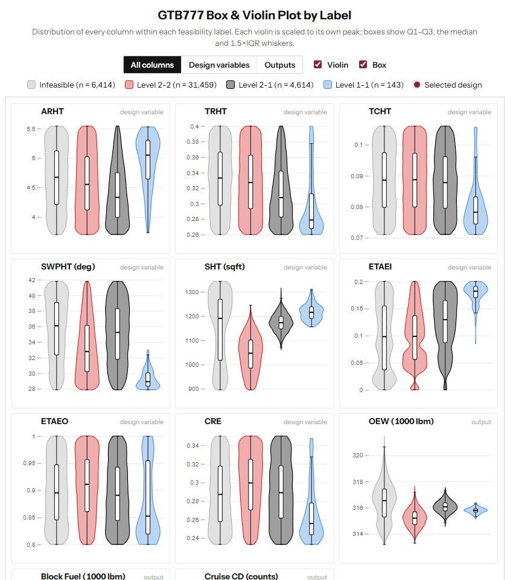

Orion reads every page
An AI browser extension that spots phishing live and shows what gave the page away.
In the Commonwealth Cyber Initiative's PREP internship, with weekly mentoring from Parsons engineers, our team of three built Orion. I trained XGBoost models on AWS SageMaker over 300+ website security signals and built the Chrome extension that reports to Amazon API Gateway.
We ran a booth and a live demo at the CCI Symposium 2026 in Richmond.

300+ signals, one verdict, and the reason why.
Airliners in a browser
At the IDOPt Lab I put aircraft design studies on the web, thousands of designs at a glance.
Working with Virginia Tech's aerospace department, I apply Design of Experiments to explore design optimization for an eVTOL, a Boeing 777 and an F-16, then build the visualizations that make tens of thousands of results readable.
The 777 demo links a scatterplot matrix, parallel coordinates, FAA Part 25 certification margins, violin plots and a design-space heatmap across 42,630 designs. With the Information-Rich Virtual Environments Lab we're also hosting GLEE, a high-dimensional calculation tool, on the web.


42,630 Boeing 777 designs, read in one sitting.
The SQL gym
DBWorkout, a gamified SQL practice platform. As student lead I built its database and API, and 170 students have trained on it in class.
I joined Virginia Tech's Human–AI Interaction and Computing Education Lab in Spring 2025 and became DBWorkout's student lead. I designed its PostgreSQL schema with SQLAlchemy, wrote authentication for 80 API endpoints with JWT and shipped Alembic migrations and Kubernetes deploys on VT's Rancher.
Now I lead a 16-person team adding VT login, Canvas LTI 1.3 and accessibility. Our work was presented at FIE 2026 and the FutureHCI 2026 workshop.
170 students tried it in class. 90% said it helped them learn.
Safe streets, by text
For NoVA Families for Safe Streets, I led a team of three to turn their web survey into a 10-question SMS survey on Twilio.
GPT-4o-mini handles timestamps and geocodes the addresses people text in, so every answer lands on a map for the group's analysis.
Team Valkyrie takes off
At the 10th Annual 3D Printed Aircraft Competition at UT Arlington, I flew Virginia Tech's plane with an Xbox controller, linked over radio with Python.
I was the team's control-systems engineer and also scripted the design analysis in Altair.
In print
DBWorkout at IEEE Frontiers in Education 2026, and check-level visualization of hidden SQL struggle patterns at the FutureHCI 2026 workshop.
WIP: DBWorkout: A Gamified SQL Practice Platform to Support Formative Learning in Database Courses, FIE 2026.
When More Attempts Makes Things Worse: Check-Level Visualization for Uncovering Hidden Struggle Patterns in SQL Learning, FutureHCI 2026.
More work
AWS certified
AWS Certified Solutions Architect, Associate. Issued by Amazon Web Services on August 11, 2026.